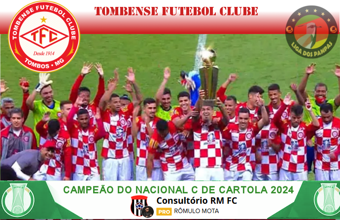
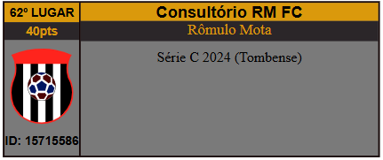

Campeonato de Cartola
A vitória no cartola é o sucesso do seu time!

Redação Cartola - 12/12/2024 - 17h09min 
Após perder a liderança faltando apenas 3 jogos para o final do campeonato, Tombense chega na última rodada na quarta colocação e termina levantando o caneco da série "C".
Com pelo menos seis clubes tendo figurado como protagonistas em algum momento do campeonato, série C foi de longe a divisão de disputa ao título mais disputada dentre os três níveis baseados em pontos corridos.
Chegando na última rodada como o candidato, dentro dos quatro póssíveis, com a missão mais difícil para chegar ao título, Tombense do "Constulrório RM FC" necessitava vencer o Avaí e torcer para que nem Ferrorivário, nem Botafogo-PB e Figueirense vencem seus jogos. E foi isso que aconteceu, com o Botafogo-PB perdendo de 1x0 para o seu homônimo de Ribeirão Preto, o Ferroriário de 2x1 para a Ferroriávia-SP e o Figueira tombando de 1x0 do Vila.
Embora qualquer dos outros membros do G4 pudessem terem saído campeões, quis o destino presentear o treinador que mais vezes passou na liderança da competição (14) contra 11 do Figueirense, 4 do Botafogo-PB e 3 do Ferroviário.
Além do título conquistado pela Tombense, todos os integrantes do G4 lograram o tão sonhado acesso à série B do ano que vem.
Com o título, o Consultório RM FC, do cartoleiro Rômulo Mota, saltou da posição não definida para 62ª posição do ranking geral dos melhores treinadores de todos os tempos, chegando à marca dos 200 pontos. 